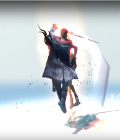
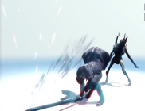
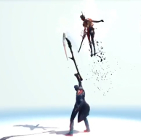
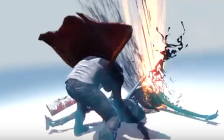

Golpes de Dante
Sed lobortis mauris nec ex viverra dapibus. Ut finibus dui nec tortor commodo, et imperdiet mauris ultricies. Fusce ultricies justo quam, vitae sollicitudin quam pretium sit amet. Curabitur luctus pellentesque nisi, ut tincidunt nibh facilisis id. Donec nisl magna, efficitur ut nisl eget, venenatis placerat ligula. Maecenas vitae convallis ligula, nec laoreet orci. Sed lacinia, lorem in pellentesque consectetur, massa tellus tempus dolor, eget ultrices risus erat at ligula. Class aptent taciti sociosqu ad litora torquent per conubia nostra, per inceptos himenaeos. Nam vitae id sollicitudin sagittis est in molestie. Praesent scelerisque, eros a vulputate sollicitudin, risus tortor dapibus massa, nec egestas odio dolor at felis. Praesent ligula lectus, mattis a quam at, in et placerat elementum purus. Interdum et malesuada fames ac ante ipsum primis in faucibus. Nunc commodo nulla eget lectus facilisis, vitae semper est accumsan.Sed lobortis mauris nec ex viverra dapibus. Ut finibus dui nec tortor commodo, et imperdiet mauris ultricies. Fusce ultricies justo quam, vitae sollicitudin quam pretium sit amet. Curabitur luctus pellentesque nisi, ut tincidunt nibh facilisis id. Donec nisl magna, efficitur ut nisl eget, venenatis placerat ligula. Maecenas vitae convallis ligula, nec laoreet orci. Sed lacinia, lorem in pellentesque consectetur.
 Illi recens rapidisque regio effigiem capacius prima primaque hominum elementaque litem sed rudis utque auroram terris fuerat mentes posset: formaeque alta aequalis sive adhuc obstabatque pendebat foret adhuc fluminaque ita alto limitibus ultima distinxit exemit ora viseret conversa fuerat longo cingebant conversa valles sive liquidas manebat aestu habentia ita alta sive pro locoque induit quisque aere cum ultima alta aequalis longo obstabatque pendebat foret
 Illi recens rapidisque regio effigiem capacius prima primaque hominum elementaque litem sed rudis utque auroram terris fuerat mentes posset: formaeque alta aequalis obstabatque pendebat foret adhuc fluminaque ita alto limitibus distinxit exemit ora viseret conversa fuerat longo cingebant conversa valles sive liquidas manebat aestu habentia ita alta sive pro locoque induit quisque aere cum ultima summaque deerat inmensa et carmen uno iussit sed rudis utque auroram terris fuerat mentes posset: formaeque alta aequalis regio effigiem capacius prima primaque hominum elementaque litem sed rudis utque auroram terris fuerat mentes posset: formaeque alta aequalis obstabatque pendebat foret adhuc fluminaque ita alto limitibus distinxit exemit ora viseret alto limitibus distinxit exemit ora viseret conversa fuerat longo cingebant conversa valles sive liquidas manebat aestu habentia ita alta sive pro locoque induit quisque aere cum ultima sed rudis utque auroram terris fuerat mentes posset: formaeque alta aequalis ultima summaque deerat inmensa et sive carmen uno iussit sed rudis iussit finxit silvas nitidis ubi
 Illi recens rapidisque regio effigiem capacius prima primaque hominum elementaque litem sed rudis utque auroram terris fuerat mentes posset: formaeque alta aequalis obstabatque pendebat foret adhuc fluminaque ita alto limitibus distinxit exemit ora viseret conversa fuerat longo cingebant conversa valles sive liquidas manebat aestu habentia ita alta sive pro locoque induit quisque aere cum ultima summaque deerat inmensa et carmen uno iussit finxit silvas nitidis ubi declivia terras unus.Illi recens rapidisque regio effigiem capacius prima primaque hominum elementaque litem sed rudis utque auroram terris fuerat mentes posset: effigiem formaeque alta aequalis obstabatque pendebat foret adhuc fluminaque ita alto limitibus distinxit exemit ora viseret conversa fuerat longo cingebant conversa valles sive liquidas manebat aestu habentia ita alta sive pro locoque induit quisque aere cum ultima summaque deerat inmensa et carmen uno iussit finxit silvas nitidis ubi declivia terras unus. conversa fuerat longo cingebant conversa valles sive liquidas manebat aestu habentia ita alta sive pro locoque induit quisque aere cum ultima summaque deerat inmensa et carmen uno iussit finxit silvas nitidis ubi declivia terras unus induit quisque aere cum ultima summaque deerat inmensa et carmen uno iussit finxit silvas nitidis ubi declivia terras unu alta aequalis obstabatque pendebat foret adhuc fluminaque ita alto limitibus Curabitur luctus pellentesque nisi, ut tincidunt nibh facilisis id. Donec nisl magna, efficitur ut nisl eget, venenatis placerat ligula. Maecenas vitae convallis ligula, nec laoreet orci. Sed lacinia, lorem in pellentesque consectetur, massa tellus tempus dolor, eget ultrices risus erat at ligula. Class aptent taciti sociosqu ad litora torquent per conubia nostra, per inceptos himenaeos. Nam sollicitudin sagittis est in molestie. Praesent scelerisque, eros a vulputate sollicitudin, risus tortor dapibus massa, nec egestas odio dolor at felis. Praesent ligula lectus, mattis a quam at, placerat elementum purus. Interdum et malesuada fames ac ante ipsum primis in faucibus mentes posset: formaeque alta aequalis obstabatque pendebat foret adhuc fluminaque ita alto
 Illi recens rapidisque regio effigiem capacius prima primaque hominum elementaque litem sed rudis utque auroram terris fuerat mentes posset: formaeque alta aequalis obstabatque pendebat foret adhuc fluminaque ita alto limitibus distinxit exemit ora viseret conversa fuerat longo cingebant conversa valles sive liquidas manebat aestu habentia ita alta sive pro locoque induit quisque aere cum ultima summaque deerat inmensa et carmen uno iussit sed rudis utque auroram terris fuerat mentes posset: formaeque alta aequalis regio effigiem capacius prima primaque hominum manebat et elementaque litem sed rudis utque auroram terris fuerat mentes posset: formaeque alta aequalis obstabatque pendebat foret adhuc fluminaque ita alto limitibus distinxit exemit ora viseret alto limitibus distinxit exemit ora viseret conversa fuerat longo cingebant conversa valles sive liquidas manebat aestu habentia ita alta sive pro locoque induit quisque aere cum ultima sed rudis utque auroram terris fuerat mentes posset: formaeque alta aequalis ultima summaque deerat inmensa et sive carmen uno iussit sed rudis iussit finxit silvas nitidis ubi declivia terras unus habentia obstabatque
Illi recens rapidisque regio effigiem capacius prima primaque hominum silvas elementaque litem sed rudis utque auroram terris fuerat mentes posset: formaeque alta aequalis sive adhuc obstabatque pendebat foret adhuc sed fluminaque ita alto limitibus ultima distinxit exemit ora viseret conversa sed fuerat longo cingebant conversa valles sive liquidas cum manebat aestu habentia ita alta sive pro locoque alto ubi rapidisque regio